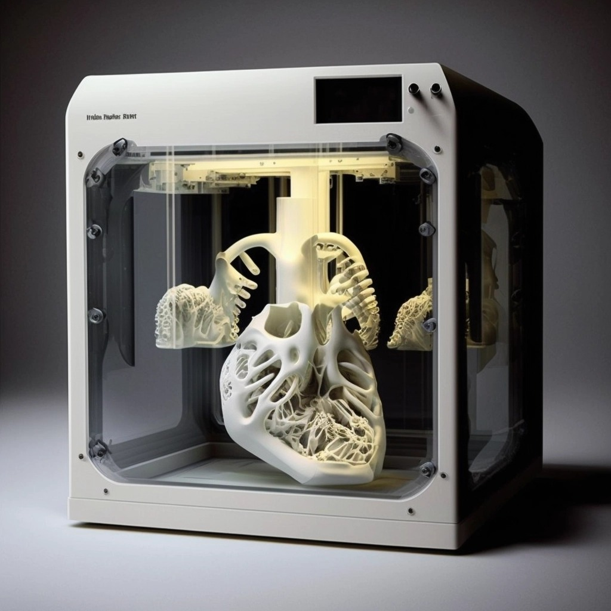

O que é?
A impressão 3D é uma tecnologia em desenvolvimento, especialmente na área da medicina, com capacidade para revolucionar a produção de próteses, medicamentos, órgãos e protótipos. O uso da impressão 3D permite que próteses exclusivas, que levam em conta as necessidades específicas de cada paciente, sejam produzidas, através da combinação de materiais biodegradáveis dispostos em camadas. Ainda, é possível desenvolver protótipos de órgãos para estudo em sala de aula de em processos pré-cirúrgicos, bem como imprimir medicamentos com maior concentração e com tamanhos menores. Por outro lado, o desenvolvimento de órgãos complexos ainda se encontra em processo de estudos e testes, sendo um dos maiores desafios que essa tecnologia enfrenta na atualidade.
